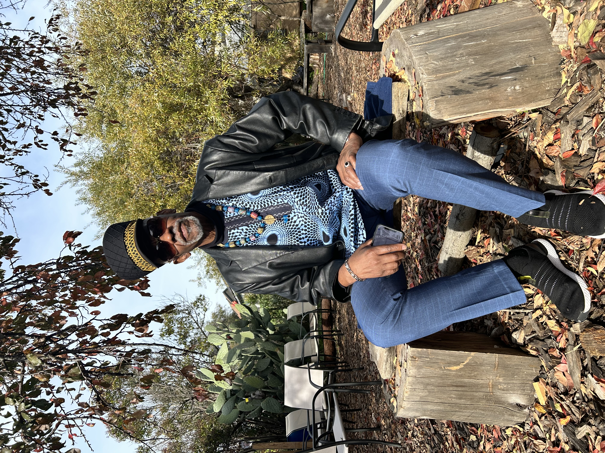
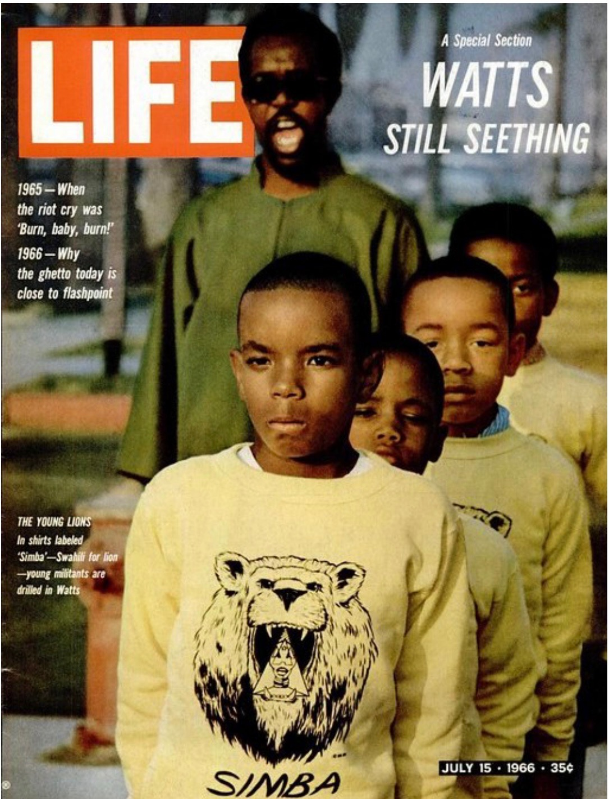

WATANI STINER

0+
0+
0
0
He is not a commentator on this history. He lived it. He carries it. And he continues to deliver it with clarity and discipline.
Watani Stiner is a lifelong advocate for Black liberation, a pillar of the Black Power movement, and a survivor of COINTELPRO — the FBI’s counterintelligence program designed to disrupt and dismantle Black political leadership in the United States. He endured decades of political repression, incarceration, and forced exile across Suriname and Guyana before returning to the United States to continue organizing, writing, and teaching.
His work has been featured in documentary film, KALW Radio, the SF Bay View, and live engagements across community, academic, and cultural platforms. He is currently preparing to publish his written work and is selectively expanding his national speaking presence.
"Not a lecture. Not a legacy frozen in time. But a living baton — passed from one generation to the next."
— Watani Stiner

Engagements
Speaking Engagements
Keynotes, featured talks, and public lectures at universities, museums, conferences, festivals, and cultural institutions.
Live Readings
Immersive readings from his written work that bring history to life through first-person narrative.
Moderated Conversations
Paired dialogues with scholars, journalists, or activists where lived experience meets contemporary analysis.
Panel Participation
Expert panelist on COINTELPRO, Black liberation history, political prisoners, mass incarceration, and decolonization.
Educational Programming
Classroom visits, student Q&A sessions, and workshops at high schools, colleges, and universities.
Media Appearances
Interviews for podcasts, radio, television, documentary, and print media.
Documentary film, press features, and live engagements — the voice COINTELPRO could not silence.

Cali Faces — Documentary Introduction

Speaking on the Black Power Movement

Engaging Students at Saint Mary's College
Tending To Historical Wounds
Daughter of a Revolutionary
STYNER STINER
What does it mean to grow up as the daughter of a revolutionary — a man shaped by COINTELPRO, exile, incarceration, and return? This is the story behind the story. Sign up to be among the first to receive an early copy.

Help Keep This History Alive
Watani Stiner has spent decades preserving a history that power tried to erase. Your contribution supports his speaking engagements, community work, and the continuation of a legacy that belongs to all of us.